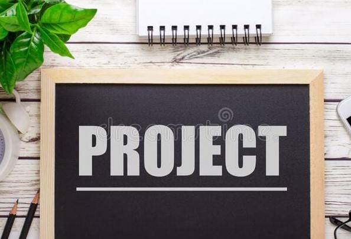

About Me
Welcome to my personal website! I'm Nehal Sonakr from Uttar Pradesh. I achieved remarkable results in my education, scoring 90.6% in my secondary school exams from B.P.S School in 2019 and securing 86% in my senior secondary education from Central Hindu Boys School Varanasi in 2021.
Currently, I am pursuing my B.Tech in Mechanical Engineering from the prestigious Indian Institute of Technology, Ropar. This educational journey has provided me with a robust foundation in the field of mechanical engineering, and I am driven by a passion for innovation and problem-solving.
I invite you to explore my personal website, where you will find a reflection of my experiences, successes, and endeavours.
Along with Academic, I am the Secretary of NGO "Pehchan Ek Safar" for this Year(2023-2024).As being the Secretary, it will be great experience for me to work with passionate volunteer. I was also the coordinator of CIM Club in our Institute.
I have also good knowledge of Excel, using it to analyse data and build detailed spreadsheets. I can design web sites user-friendly, thanks to my solid command of HTML and CSS. I can make webpages more interactive and dynamic by using JavaScript. I am proficient in Python and C/C++ programming languages and have utilised them to tackle challenging issues. I also have hands-on experience with SolidWorks and AutoCAD, which I can use to design 3D models and produce in-depth technical drawings. These abilities demonstrate my adaptability and competence across a wide range of fields, including data analysis, web development, and engineering design.
One of my notable projects is a "Guess the Number" game developed using my proficiency in Python and GUI programming. This interactive game engages users to guess a randomly generated number.
Additionally, I have worked on a Dice Simulator website where I applied my knowledge of HTML, CSS, and JavaScript.
Furthermore, by creating a prototype for an elliptical trammel, I have demonstrated my engineering abilities. I created and built a working prototype of this amazing mechanism using SolidWorks and AutoCAD, showcasing my capacity to translate ideas into practical solutions.
These projects not only showcase my technical skills but also my passion for innovation, creativity, and problem-solving. They demonstrate my aptitude for programming, website design, and engineering.

Drawing and art hold a special place in my heart, allowing me to bring my fantasies to life and express my creativity. Music exploration is a constant source of inspiration for me, as I dive into different genres and discover new sounds that resonate with my soul. Writing poetry and shayari gives me the power to encapsulate my emotions and paint vivid pictures with words, conveying the beauty of life.
Engaging in these hobbies brings me immense pleasure and allows me to express myself in unique and meaningful ways. They serve as a medium of self-discovery, providing a sense of purpose and fulfillment in my life. Through drawing, music, and writing, I am able to share my perspective and touch others with the depth of my artistic expressions.